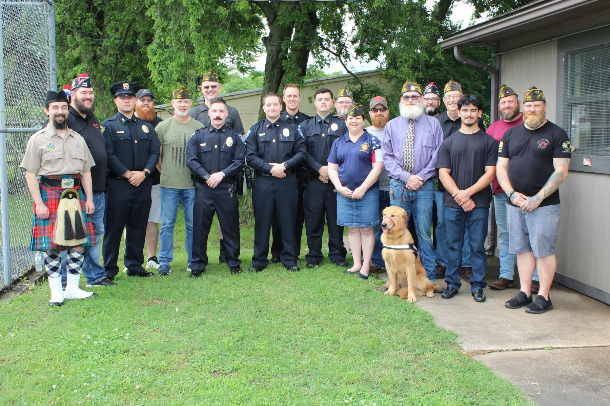

About Post 9126
Honoring The Past. Embracing The Future.
Veterans serving veterans—and Glenpool.
We believe a VFW Post should be a place veterans want to come back to and a community partner people know they can count on.
Honoring The Past. Embracing The Future.
We believe a VFW Post should be a place veterans want to come back to and a community partner people know they can count on.
Post 9126 exists to preserve the fellowship forged through military service while continuing that spirit of service here at home.
That means supporting veterans and families, creating opportunities for connection, engaging young people, and remaining active in the Glenpool community.

Visit us at 46 W 145th St South in Glenpool. The Post is open Wednesdays from noon to 5 PM and Sundays from 1 to 5 PM.
More than a meeting space, the Post is a place for veterans, families, programs and community members to gather.